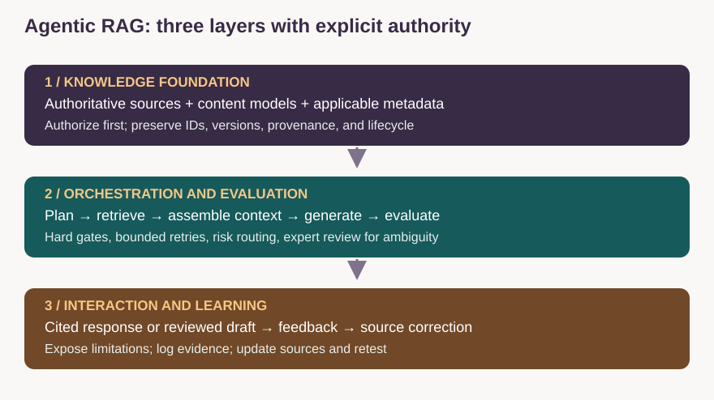

Proposed strategy · informed by documented experience
Governing Agentic Retrieval from Source to Answer
Designed a strategy that connects source authority, retrieval controls, evaluation, and accountable review.
The problem
A knowledge assistant can produce a polished answer from the wrong product version, an unapproved draft, or a source the requester cannot access. Improving the final prompt alone does not resolve missing authority, weak applicability, or stale evidence.
Experience and proposal
My documented foundation includes structured content and metadata work, quality-control systems, and a hackathon knowledge-graph proof of concept connecting products, capabilities, concepts, tasks, APIs, and versions. The three-layer Agentic RAG design on this page is a proposed strategy informed by that experience. It is not a claim of a production deployment.

Layer 1: authoritative knowledge
The source system governs approved facts. The search or vector index is a derived retrieval representation, not the source of truth. Model content around reader tasks and store IDs, source location, version, owner, approval, access, and review triggers. Validate and propagate this context to indexed chunks. A knowledge graph adds explicit connections for questions about dependencies and applicability; it is optional where metadata and hybrid search are sufficient.
Journey mapping defines the user’s task, starting state, permitted action, and success criterion. Those dimensions become retrieval requirements: an onboarding question needs current guidance for that role and stage, rather than whichever page shares the most words.
Layer 2: bounded orchestration
Agentic retrieval may plan several searches or choose approved tools to gather evidence. It does not require multiple autonomous agents. I would begin with a deterministic workflow and add bounded agent decisions only where testing shows value beyond simpler retrieval.
| Responsibility | Decision and boundary |
|---|---|
| Planner/retriever | Identify task; select approved search tools; enforce permissions and applicability before context assembly |
| Context assembler | Deduplicate, rank, preserve source IDs and scope; surface conflicts or missing evidence |
| Generator | Draft from supplied eligible evidence; identify unknowns; cannot approve or publish its own work |
| Evaluator | Apply deterministic checks and calibrated model judgments; flag unsupported claims and critical failures |
| Risk router / human expert | Review ambiguity, high-risk changes, low-evidence outputs, and external claims; record accountable approval |
Evaluation rubric and release gates
| Dimension | Evidence and check | Failure action |
|---|---|---|
| Retrieval | Expected eligible sources present; wrong-version/restricted sources excluded | Repair filters or source data; abstain if evidence inadequate |
| Claim support | Material claims entailed by cited source passages | Block unsupported critical claims |
| Task usability | Prerequisites, steps, results and recovery fit the user task | Revise and repeat a user walkthrough |
| Style/accessibility | Defined terminology, structure, understandable language and accessible presentation | Correct stable rule failures; review exceptions |
| Authorization and policy | Authenticated access, permitted use, risk-specific approval | Block disclosure or publication |
| Operations | Latency, cost, bounded retries, failure route and audit record | Stop or fall back within an approved policy |
A model-based evaluator is an additional source of judgment, not a guarantee of correctness. Calibrate it against expert labels, inspect disagreement and false-positive patterns, and keep critical failures as hard gates rather than averaging them into a passing score.
Layer 3: interaction and output
Return a cited answer for eligible, adequately supported questions. State limitations or route to an expert when evidence is insufficient. External copy, new positioning, sensitive policy, and unfamiliar consequential instructions require the designated review path. Log the source snapshot, decisions, evaluator results, and approval needed to diagnose a failure.
Concrete retrieval example
A requester asks how to inspect a v2 job. A v1 draft is semantically similar but ineligible; an approved v2 topic passes applicability and access checks. The answer uses the supported endpoint and state definitions. If the requester asks for an undocumented completion guarantee, the system states that the source does not specify one. This example illustrates intended behavior, not measured production performance.
Leadership and delivery
The KM leader owns knowledge policy, domain accountability, the evidence model, adoption, and task-value measures. Engineering owns retrieval implementation, trusted authorization, runtime controls, and observability. Domain reviewers govern facts and exceptions. Analytics establishes the baseline and comparable cohorts. An integrated plan tracks owners, dependencies, risks, decision dates, and release criteria.
Decision to scale
Expand only when representative task tests pass, critical failures are resolved, permissions are enforced, maintainers accept ownership, and operating cost is justified. Compare agentic retrieval with a simpler baseline on the same evidence and cases. The proposed benefit is better applicable evidence and less rework; no reduction percentage or “hallucination-free” guarantee is claimed.
Technical references
Microsoft Learn: Retrieval-augmented generation in Azure AI Search. https://learn.microsoft.com/en-us/azure/search/retrieval-augmented-generation-overview
Consortium for Service Innovation: KCS. https://www.serviceinnovation.org/kcs/